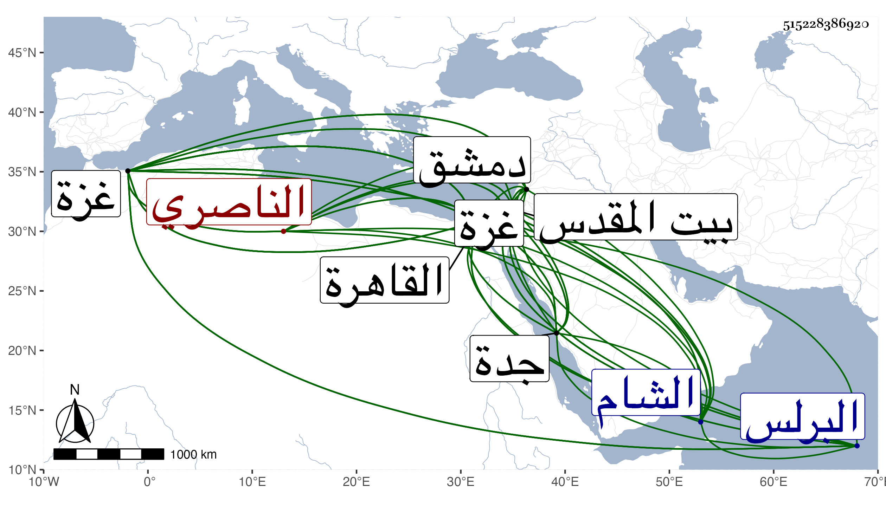

0902Sakhawi.DawLamic.ITO20230111-ara1.EIS1600.515228386920
Biography ID: 515228386920
1140
يلخجا من مامش الناصري . أصله للظاهر برقوق اشتراه مع أبويه وأنعم بهم على ولده عبد العزيز الملقب بالمنصور وجعل أباه من مماليك الأطباق وتربى الولد مع الولد إلى أن تسلطن بعد خلع أخيه الناصر فرج فلما عاد الناصر وحبس أخاه جعل هذا خاصكيا ثم ساقيا وزاد اختصاصه به وأثرى مع الحشم والمماليك والبرك ، كل ذلك قبل استكمال العشرين ، فلما قتل أستاذه واستقر المؤيد عزله عن السقاية واستقر في جملة الخاصكية وحظي عنده أيضا لكونه محببا في الأمراء بحيث يتردد إليه أعيانهم ، ولما هرب مقبل الدوادار من القاهرة حين كون ططر مدبر المملكة انضم إليه ودخلا مع نائب الشام جقمق الأرغونشاوي فلما انكسر اختفى هذا مدة بدمشق ثم ظهر وعاد صحبة الظاهر ططر إلى القاهرة ودام على خاصكيته مع عظمته وكثرة ما بيده من الإقطاعات ثم أنعم عليه الأشرف بأمرة عشرة وجعله من رءوس النوب وسافر في سنة أربع وثلاثين أمير الركب الأول ثم استقر في سنة سبع وثلاثين مشدا على بندر جدة رفيقا للكريمي ابن كاتب المناخات ثم عاد فأنعم عليه العزيز بطبلخانات ، ثم صار في أيام الظاهر رأس نوبة ثاني ثم نائب غزة في سنة تسع وأربعين وخرج إليها في تجمل زائد فلم يلبث أن تعلل ولزم الفراش مدة وبطل أحد شقيه واستعفى وطلب العود فأعفي وكتب بتوجهه إلى القدس فمات قبل وصول الخبر إليه بغزة في أوائل جمادى الآخرة سنة خمسين وهو في عشر الستين ودفن بجامع ابن عثمان ظاهر غزة ووهم العيني حيث قال أنه مات ببيت المقدس ، وكان تركيا شجاعا مقداما كريما جميلا بحيث كان يضرب بحسنه في شبيبته المثل خفيف اللحية كاملها أخضر اللون بالغ ابن تغرى بردى في الثناء عليه وأنه كان أحق بالأتابكية من غيره وأما العيني فإنه قال أنه لم يكن مشكور السيرة لأنه كان يرتكب أخذ أموال الناس ظلما كفعله مع أهل البرلس حين توجه لأخذ خراجها فإنه ارتكب هناك ما ارتكبه غيره من الظلمة المفسدين ، زاد غيره أنه أمر في مرضه بتوسيط جماعة كانوا في سجنه من جهة حطط حاجبها المستقر الآن في نيابتها عفا الله عنه .
